目录
双机热备的概念简单说一下，就是要保持两个数据库的状态自动同步。对任何一个数据库的操作都自动应用到另外一个数据库，始终保持两个数据库数据一致。 这样做的好处多。
- 可以做灾备，其中一个坏了可以切换到另一个。
- 可以做负载均衡，可以将请求分摊到其中任何一台上，提高网站吞吐量。 对于异地热备，尤其适合灾备。
mysql 备份工作原理
简单的说就是把 一个服务器上执行过的sql语句在别的服务器上也重复执行一遍， 这样只要两个数据库的初态是一样的，那么它们就能一直同步。
当然这种复制和重复都是mysql自动实现的，我们只需要配置即可。

上图中有两个服务器， 演示了从一个主服务器（master） 把数据同步到从服务器（slave）的过程。
这是一个主-从复制的例子。 主-主互相复制只是把上面的例子反过来再做一遍。
对于一个mysql服务器， 一般有两个线程来负责复制和被复制。当开启复制之后。
- 作为主服务器Master， 会把自己的每一次改动都记录到 二进制日志 Binarylog 中。 （从服务器会负责来读取这个log， 然后在自己那里再执行一遍。）
- 作为从服务器Slave， 会用master上的账号登陆到 master上， 读取master的Binarylog, 写入到自己的中继日志 Relaylog， 然后自己的sql线程会负责读取这个中继日志，并执行一遍。 到这里主服务器上的更改就同步到从服务器上了。
在mysql上可以查看当前服务器的主，从状态。 其实就是当前服务器的 Binary（作为主服务器角色）状态和位置。 以及其RelayLog（作为从服务器）的复制进度。
在主服务器上查看主状态：
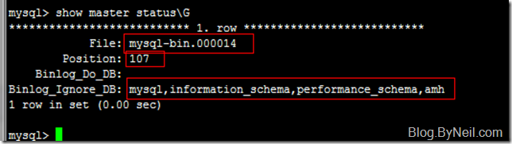
1 | mysql> show master status\G |
- 第一行表明 当前正在记录的 binarylog文件名是： mysql-bin.000014.
我们可以在mysql数据目录下，找到这个文件：
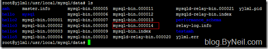
- 第二行， 107. 表示当前的文件偏移量， 就是写入在mysql-bin.000014 文件的记录位置。
这两点就构成了 主服务器的状态。 配置从服务器的时候，需要用到这两个值。 告诉从服务器从哪读取主服务器的数据。 （从服务器会登录之后，找到这个日志文件，并从这个偏移量之后开始复制。）
- 第三行，和第四行，表示需要记录的数据库和需要忽略的数据库。 只有需要记录的数据库，其变化才会被写入到mysql-bin.000014日志文件中。
在从服务器上，查看从服务器的复制状态。
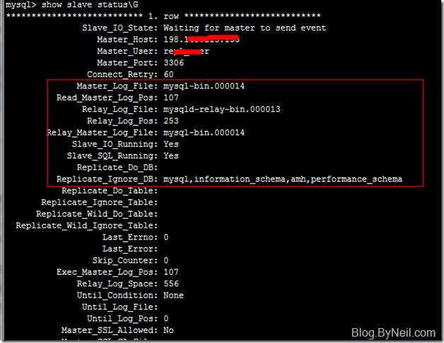
1 | mysql> show slave status\G |
Master_host 指的是 主服务器的地址。
Master_user 指的是主服务器上用来复制的用户。 从服务器会用此账号来登录主服务。进行复制。
Master_log_file 就是前面提到的， 主服务器上的日志文件名.
Read_Master_log_pos 就是前面提到的主服务器的日志记录位置， 从服务器根据这两个条件来选择复制的文件和位置。
Slave_IO_Running: 指的就是从服务器上负责读取主服务器的线程工作状态。 从服务器用这个专门的线程链接到主服务器上，并把日志拷贝回来。
Slave_SQL_Running: 指的就是专门执行sql的线程。 它负责把复制回来的Relaylog执行到自己的数据库中。 这两个参数必须都为Yes 才表明复制在正常工作。
mysql 主从
这里有两个重点， 要想同步数据库状态， 需要相同的初态，然后配置同步才有意义。
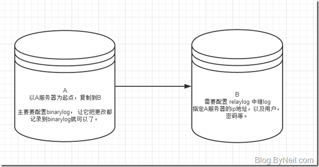
先以A服务器为起点， 配置它的数据库同步到B。 这就是主-从复制了。 之后再反过来做一次，就可以互相备份了。
1， 第一步，
在A上面创建专门用于备份的 用户：
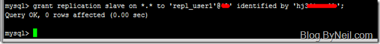
1 | grant replication slave on *.* to 'repl_user'@'192.***.***.***' identified by 'hj34$%&mnkb'; |
上面把ip地址换成B机器的ip地址。 只允许B登录。安全。
用户名为： repl_user
密码为： hj34$**nkb
这个等会在B上面要用。
- 开启主服务器的 binarylog。
很多服务器是默认开启的，我们这里检查一下：
打开 /etc/my.cnf
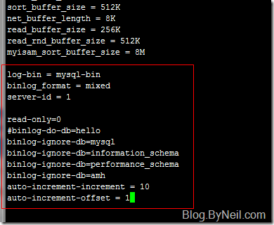
binlog-do-db 用来表示，只把哪些数据库的改动记录到binary日志中。
binlog-ignore-db 表示，需要忽略哪些数据库。
后面两个用于在 双主（多主循环）互相备份。 因为每台数据库服务器都可能在同一个表中插入数据，如果表有一个自动增长的主键，那么就会在多服务器上出现主键冲突。 解决这个问题的办法就是让每个数据库的自增主键不连续。 上图说是， 我假设需要将来可能需要10台服务器做备份， 所以auto-increment-increment 设为10. 而 auto-increment-offset=1 表示这台服务器的序号。 从1开始， 不超过auto-increment-increment。
这样做之后， 我在这台服务器上插入的第一个id就是 1， 第二行的id就是 11了， 而不是2.
（同理，在第二台服务器上插入的第一个id就是2， 第二行就是12， 这个后面再介绍） 这样就不会出现主键冲突了。 后面我们会演示这个id的效果。
- 获取主服务器状态， 和同步初态。
假设我现在有这些数据库在A上面。
如果你是全新安装的， 那么不需要同步初态，直接跳过这一步，到后面直接查看主服务器状态。
这里我们假设有一个 hello 数据库作为初态。
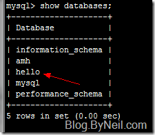
先锁定 hello数据库：1
FLUSH TABLES WITH READ LOCK;
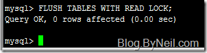
然后导出数据：
只需要导出hello数据库， 如果你有多个数据库作为初态的话， 需要导出所有这些数据库：
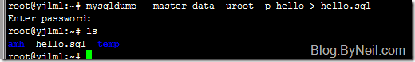
然后查看A服务器的binary日志位置：
记住这个文件名和 位置， 等会在从服务器上会用到。
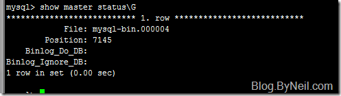
主服务器已经做完了， 可以解除锁定了：
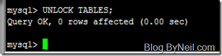
- 设置从服务器 B 需要复制的数据库
打开从服务器 B 的 /etc/my.cnf 文件：
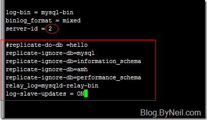
server-id 必须保证每个服务器不一样。 这可能和循环同步有关。 防止进入死循环。
replicate-do-db 可以指定需要复制的数据库。
replicate-ignore-db 复制时需要排除的数据库, 除开系统的几个数据库之外，所有的数据库都复制。
relay_log 中继日志的名字。 前面说到了， 复制线程需要先把远程的变化拷贝到这个中继日志中， 在执行。
log-slave-updates 意思是，中继日志执行之后，这些变化是否需要计入自己的binarylog。 当你的B服务器需要作为另外一个服务器的主服务器的时候需要打开。 就是双主互相备份，或者多主循环备份。
保存， 重启mysql。
- 导入初态， 开始同步。
把刚才从A服务器上导出的 hello.sql 导入到 B的hello数据库中， 如果B现在没有hello数据库，请先创建一个， 然后再导入：
创建数据库：1
mysql> create database hello default charset utf8;
把hello.sql 上传到B上， 然后导入：
如果刚才导出了多个数据库， 需要把他们都一一上传导入。
开启同步, 在B服务器上执行：1
2
3
4
5
6CHANGE MASTER TO
MASTER_HOST='192.***.***.***',
MASTER_USER='repl_user',
MASTER_PASSWORD='hj3****',
MASTER_LOG_FILE='mysql-bin.000004',
MASTER_LOG_POS=7145;
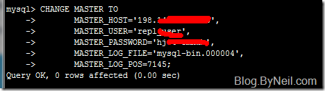
重启mysql， 然后查看slave线程开启了没：
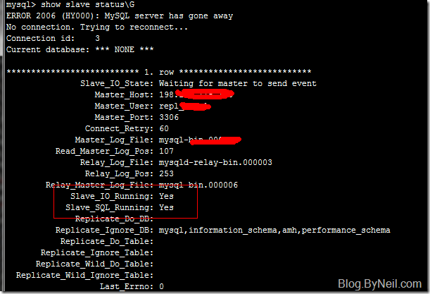
注意图中的红框， 两个都是Yes， 说明开启成功。
Slave_IO_Running: Yes
Slave_SQL_Running: Yes
如果其中一个是No， 那就说明不成功。需要查看mysql的错误日志。 有时候密码填错了， 有时候防火墙的3306没有打开。ip地址不对，等等。 都会导致失败。
看错误日志: mysql的错误日志一般在：
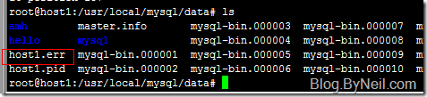
到这里主-从复制已经打开了。
此时不要在B中修改数据。 我们接着配置从B到A的复制。 如果你只需要主从复制的话， 到这里就结束了。后面可以不看了。 所有A中的修改都能自动同步到B， 但是对B的修改却不能同步到A。 因为是单向的。 如果需要双向同步的话，需要再做一次从B到A的复制。
mysql 主主互备
- 在B中创建用户；
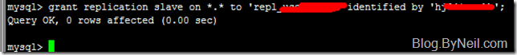
- 打开 /etc/my.cnf ， 开启B的binarylog：
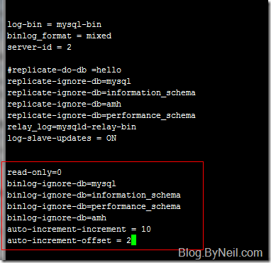
注意红框中所新添加的部分。
- 我们不需要导出B的初态了，因为它刚刚才从A导过来。 直接记住它的master日志状态：
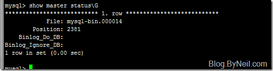
记住这两个数值，等会在A上面要用。
B服务器就设置完了
- 登录到A 服务器。 开启中继：
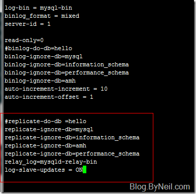
注意框中心添加的部分
- 启动同步：
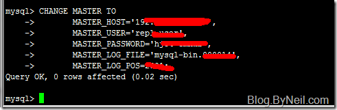
上面的ip地址是B的ip地址， 因为A把B当做master了。
然后重启mysql服务。
然后查看，slave状态是否正常：
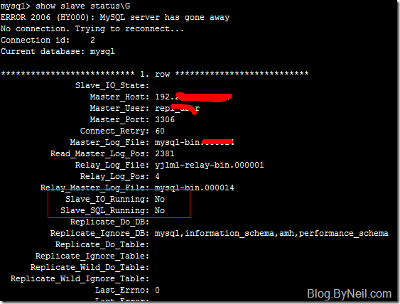
图中出现了两个No。
Slave_IO_Running: No
Slave_SQL_Running: No
说明slave没有成功， 即，从B到A的同步没有成功。 我们去查看mysql错误日志
找到 机器名.err 文件，打开看看：
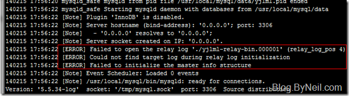
看图中的error信息。 说找不到中继日志文件。
这是因为我们在配置A的中继文件时改了中继文件名，但是mysql没有同步。解决办法很简单。
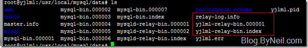
先停掉mysql服务。 找到这三个文件，把他们删掉。 一定要先停掉mysql服务。不然还是不成功。你需要重启一下机器了。 或者手动kill mysqld。
好了， 启动mysql之后。 我们在来检查一下slave状态：
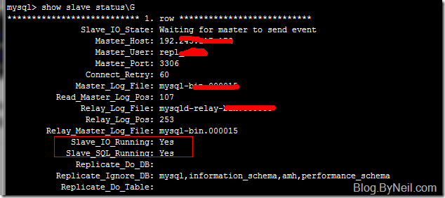
Slave_IO_Running: Yes
Slave_SQL_Running: Yes
证明从B到A的复制也成功了。
至此， AB双主互相热备就介绍完了。